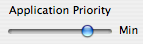
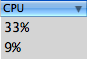

Discover App Stop
App Stop is a powerful application engineered to allow you to take control of the applications running on your computer allowing you to increase the speed of your computer. App Stop allows you to peform many operations on your applications such as pausing, setting processor priority, and force quitting. App Stop is great for people with slower computers, or for people who run processor hungry applications (such as video editors), who need to squeeze every ounce of speed out of their computer. App Stop is compromised of two main parts: the menu-item's drop-down menu, and the application manager
Take Control Of Your Apps |
|
|
All of us Mac users have many applications open at one time. Having alot of applications open at once doesn't mean you have to sacrifice speed. App Stop allows you to pause applications, which essentially freezes them in time until they are resumed. |
|
Your Processor Can Have Favorites Too |
|
|  |
Let your processor know which applications you want to run faster, and which applications you want to run slower; allowing your to speed up certain programs and slow other programs down. |
Find The Hog |
|
|  |
App Stop allows you to easily find that application that is eating all your processor, leaving other applications hungry for more processing power. Using some of the other application managment features of App Stop you can take control of that application and bring the speed of your computer back to normal levels |
Kill The Un-Killable |
|
|
App Stop uses unix tricky to allow you to easily kill applications that just wont die. Click the link below to learn how to use App Stop Table View to manage all those stubborn applications. |
|